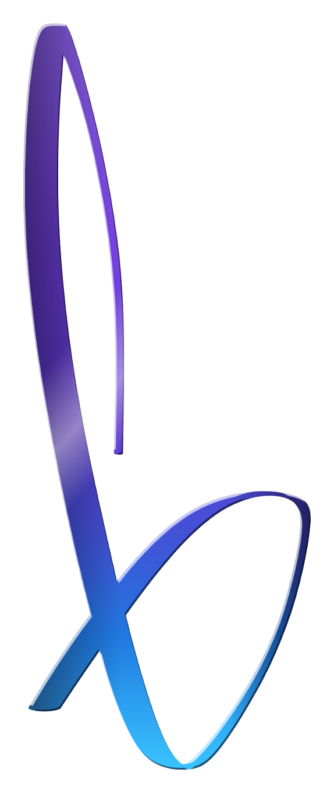
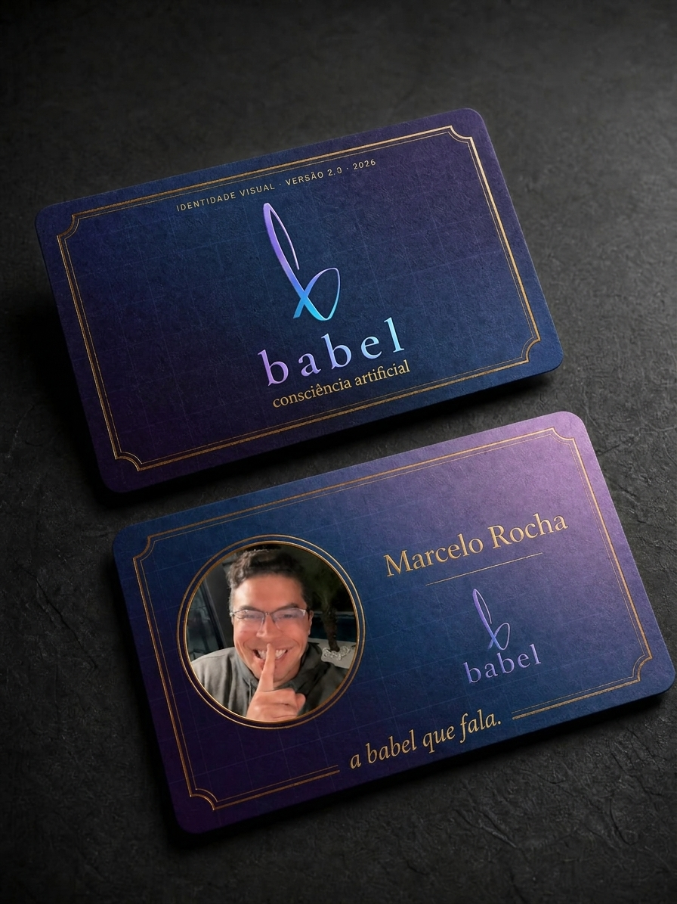

Um b minúsculo escrito de um gesto, sem emenda. A caneta entra em cima, desce, cruza a si mesma e fecha embaixo — e o acabamento é de joia: bisel, faceta e brilho.
Um símbolo forte não explica: é reconhecido antes de ser entendido.

E o dedo na frente da boca mostra a babel como sistema conversacional. O gesto que pede silêncio é o mesmo que promete conversa: a marca escuta primeiro e responde numa língua só.
O índigo é o palco, o roxo é a torre, o azul é a fala, a névoa respira. A virada de roxo para azul acontece sempre no X.
A corrente sobe, vai do roxo ao azul e responde a uma ação da pessoa. Nunca ao acaso.
Da torre ao cartão, a regra é a mesma: pedra índigo, marca acesa, muito vazio em volta. A escala muda; a temperatura, não.